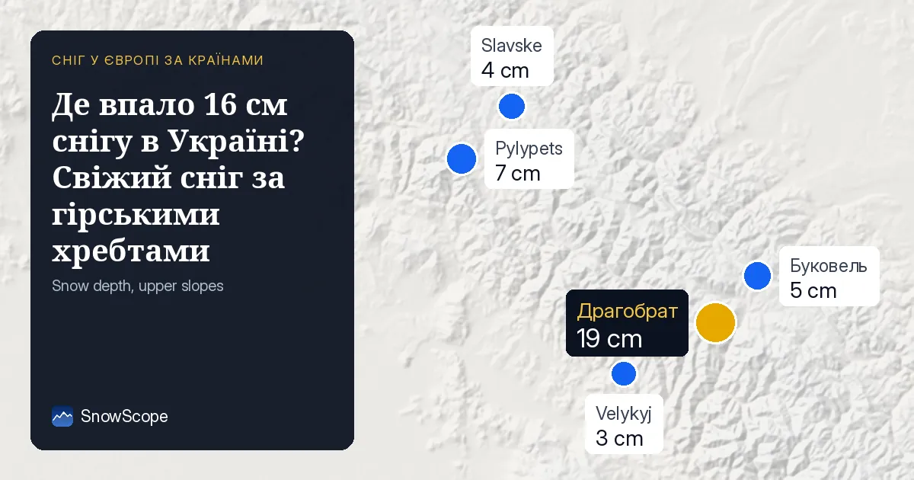
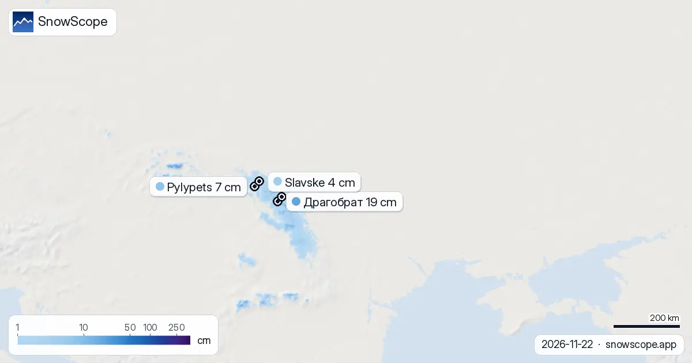
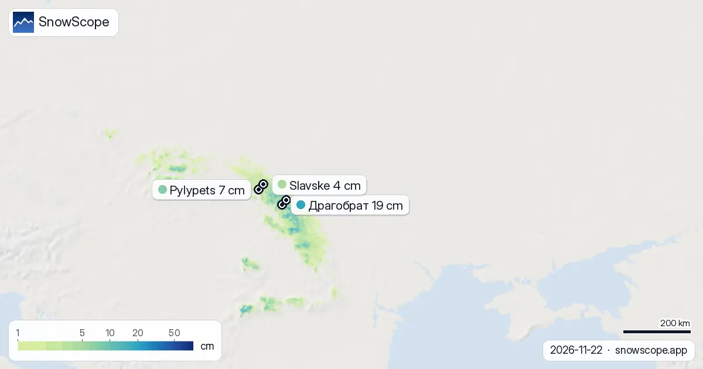

Де впало 16 см снігу в Україні? Свіжий сніг за гірськими хребтами
За останні три дні українські гори отримали від 14 до 24 см свіжого снігу на різних хребтах. Найбільше снігу впало на вершинах Чорногори, а нижчі хребти отримали менше.
Дивіться сніговий прогноз для Драгобрат у застосунку SnowScopeВисота снігу, сповіщення та 3D-карта, безкоштовно.
Три хребти, три глибини снігу
Коли я дивлюся на картину опадів на українських горах за останні 72 години, я бачу чітку історію, написану висотою та розташуванням. Найвища, найхолоднішу частину системи—Чорногору—накрило 24 см нового снігу. Це найвіший хребет, який ми зараз відстежуємо. Рухаючись на захід, Горгани отримали 19 см, що все ще значно. Далі в системі хребет Боржава накопичив 14 см. Різниця між цими хребтами розповідає нам про те, як рухалася погодна система і де найдовше залишалося холодне повітря.
Такої хребет-за-хребтом варіацію типово видно в гірських дослідженнях снігу. Найвищі вершини захоплюють більше вологи і залишаються холоднішими, тому накопичують більше снігу. Картина також показує, що шторми рухалися вздовж гірської осі, з Чорногорою на сході, яка витягнула найбільше опадів.
| Курорт | Висота снігу | Новий сніг, 72 год | Найближчі дні | Вершина |
|---|---|---|---|---|
| Драгобрат | 19 cm | 22 cm | 11 cm | 1 706 m |
| Pylypets | 7 cm | 9 cm | 4 cm | 1 165 m |
| Буковель | 5 cm | 9 cm | 8 cm | 1 370 m |
| Slavske | 4 cm | 6 cm | 6 cm | 1 213 m |
| Velykyj | 3 cm | 4 cm | 8 cm | 593 m |

Що впало за останні 24 години
Вчора до сьогодні максимально 4 см свіжого снігу впало на промодельованій території, але завтра буде активніше. Близько 4150 кв. км отримало 5 см або більше свіжого снігу в 72-годинному вікні. Завтра, 2026-11-23, обіцяє бути найснігавішим днем наступного тижня з максимумом 7 см в прогнозі. Межа снігу сьогодні сидить на 700 м, що означає, що нижча земля мокра або оголена, а високі вершини отримують хорошу накопичення.

Драгобрат лідує серед курортів
Серед гірськолижних зон Драгобрат (1706 м) вирізняється 19 см на землі зараз, накопленим з 22 см за 72 години. Така глибина тонка для гірського туризму, але це найкраще в Україні прямо зараз. Наступні найкращі курорти набагато нижче: Пилипець має 7 см (9 см додано) і Буковель має 5 см (9 см додано). Більшість інших курортів все ще в однозначних цифрах. Різниця висоти важлива тут—Драгобрат сидить на 500 м вище за Пилипець, тому залишається холоднішим і ловить більше снігу.
У діапазоні 1500 до 2000 м наша модель показує середню глибину 14 см з повним покриттям снігу. Саме там лежить потенціал гірськолижного туризму. Нижче 1500 м, покриття патчеве і глибини низькі.
Покриття снігом зросло за один тиждень
Площа, покрита снігом, зросла з 6120 кв. км сім днів тому до 11820 кв. км сьогодні. Це збільшення на 5700 кв. км за один тиждень. Вчора самотужки додало 2700 кв. км снігопокритої землі. Прямо зараз 67 відсотків промодельованого регіону білі. Цей швидкий ріст відображає зсув від сухих умов до активної штормової картини.
Що буде далі
Прогнози на 72 години та 7 днів показують, що більше снігу на шляху. Максимум на наступні три дні прогнозується на 11 см, а наступні сім днів можуть принести 17 см. Драгобрат, імовірно, побачить найбільше, з очікуваними 11 см на наступні три дні. Найснігавіший день—завтра, 2026-11-23. Після цього темп сповільниться, але накопичення буде продовжуватися. Для тих, хто планує східне туристичне або веревкове, вікно між 2026-11-23 та 2026-11-25 це коли гори пропонуватимуть найсвіжіший сніг.
Читання сигналу високої землі
Один ключовий деталь з польової роботи в сухих гірських хребтах: коли свіжий сніг впадає нерівномірно через такі хребти, це розповідає нам про напрямок вітру та форму шторму. Те, що Чорногора отримала найбільше снігу, припускає, що штормова система живила вологу з певного напрямку у найвищі вершини. Це хороша новина для високовисотного туризму, але означає, що нижчі курорти залишатимуться снігодефіцитними на деякий час.
Якщо ви плануєте позаслужбову діяльність, перевірте офіційний лавинний бюлетень регіону. Ранній сезонний сніг на тонкому ґрунті може бути нестійким.
Поради лижникам
- Драгобрат і високі вершини вище 1500 м містять найбільше придатного снігу (середня глибина 14 см з повним покриттям). Нижчі курорти нижче 1000 м все ще граничні.
- Завтра, 2026-11-23, це день, на який потрібно звернути увагу на свіжий порошок на вищих висотах; очікуйте до 7 см нового снігу.
- Покриття снігом зросло на 5700 кв. км за один тиждень, але більшість цього тонке (1 см на діапазоні 500–1000 м). Справжня глибина катання вище 1500 м.
- Наступні три дні додадуть ще 11 см до високих вершин. Почекайте, поки накопичення стане товще перед тим, як брати на себе тури на нижчих територіях.
- Перевірте офіційний лавинний прогноз перед виходом позаслужбово; ранній сезонний сніг на тонкій основі може зсуватися.
About these numbers
Resort snow depths are the deepest snow on the resort's upper slopes on the date shown; they are estimates for an area, not a measurement at one point. Forecasts can change. Always read the official avalanche bulletin before going off-piste.
Cite this report
For research, teaching or the press: the numbers and charts are free to reuse under CC BY 4.0 with this citation.
SnowScope (2026), Де впало 16 см снігу в Україні? Свіжий сніг за гірськими хребтами, https://snowscope.app/blog/uk/2026/11/ukraine-where-the-snow-fell-22-november-2026.html, accessed 2026-11-22
SnowScope (Atlas Labs). (2026, November 22). Де впало 16 см снігу в Україні? Свіжий сніг за гірськими хребтами. SnowScope snow reports. https://snowscope.app/blog/uk/2026/11/ukraine-where-the-snow-fell-22-november-2026.html
BibTeX
@misc{snowscope2026ukrainewherethesnowfell2,
author = {{SnowScope (Atlas Labs)}},
title = {Де впало 16 см снігу в Україні? Свіжий сніг за гірськими хребтами},
year = {2026},
month = nov,
howpublished = {\url{https://snowscope.app/blog/uk/2026/11/ukraine-where-the-snow-fell-22-november-2026.html}},
note = {Published 2026-11-22 12:32 UTC; accessed 2026-11-22}
}· CC BY 4.0 · Methods, data and tools →
Драгобрат: snow and temperature by height, this winter vs last (tools) →
Follow Драгобрат
Безкоштовно: повідомлення, коли йде новий сніг, і прогноз щоранку.